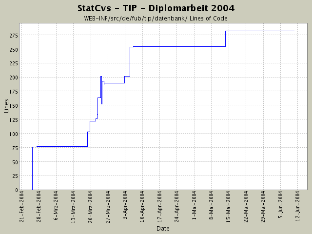

Summary Period: 2004-02-25 to 2004-06-10
[root]/WEB-INF/src/de/fub/tip/datenbank
 factory
(13 files, 697 lines)
factory
(13 files, 697 lines)
 logik
(11 files, 3523 lines)
logik
(11 files, 3523 lines)

Total Lines Of Code:
282 (2004-06-13 13:05)
| Author | Changes | Lines of Code | Lines per Change |
|---|---|---|---|
| hirsch | 26 (100.0%) | 437 (100.0%) | 16.8 |
Umgebungsanzeige so verändert, dass zusätzlich die Bilder der
Sehenswürdigkeiten mit geladen werden.
Dazu Anpassungen in der Logikkomponenten und der View!
Ansonsten Kosmetik an Javadoc und Zeilenumbrüchen.
4 lines of code changed in:
Rechtschreibfehler beseitigt in Titelseite, die auch im Anhang ist
1 lines of code changed in:
Passwortänderung an INF zieht sich durch die gesamte Anwendung:
a) Struts-config.xml
b) alle Actions, die am Pool vorbei Verbindungen holen
(daher neue Klasse, die Verbindung statisch abstrahiert)
28 lines of code changed in:
zusätzliches Logging der Logik eingebaut - damit ich endlich diesen
Fehler finde ...
2 lines of code changed in:
Nach Mail an Richard:
http://statcvs.sf.net/manual/
Sektion Ant Tasl
Anpassen der Links und Verwendung von Platzhaltern
für die Pfade ....
2 lines of code changed in:
komplettes Dokumentieren der einzelnen Packages nach dem heute
rausgefundenen Schema von SUN -
juchhe!
Viel Tipparbeit - aber jetzt sieht das Javadoc-Resultat
wenigstens wie eine Anwendung aus.
Die neue statcvs-Version ist auch sehr gut!
52 lines of code changed in:
StandortPruefer: Eingeben eines Standortnamens angefange n..,..
23 lines of code changed in:
CodeBeautify: bis auf 2x JavaDoc ist alles
im 80 Zeichen-Rahmen
20 lines of code changed in:
Refactoring:
einige alte Datenbankkomponenten entfernt
Nach manuellem Einfügen der Protokolldaten wird zumindest was
gefunden ... derzeit gibt es aber noch probleme mit der geschlossenen
Datenbankverbindung (wird sich sicher lösen lassen)
8 lines of code changed in:
hasVisited() implementiert!
56 lines of code changed in:
Umstellung gibt keinen Fehler, aber die
Daten landen nicht in der DB .... mmmh.
Linkproblem mit java2html -
in struts-config war falscher Verweis!!!
16 lines of code changed in:
Konsistenzproblem in Katjas Daten festgestellt -
sie hat beim Einfügen die Schlüssel nicht gepflegt
(addVisit())
41 lines of code changed in:
Es kommen keine POSTGRESQL-Fehler mehr -
<b>NIEMALS</b> in ' maskieren!!!!
Das geht immer schief - KACKE!
35 lines of code changed in:
Ersetzungsidee von
Mailingliste scheint nicht so richtig zu gehen ... komisch!
Statement zwecks debugging reduziert!
9 lines of code changed in:
Ausnahmebehandlung hinzugefügt,
Feld in SightVO für ID,
eventarea.jsp angepasst
application.properties-Werte geschrieben -
Logik in NachSehenswürdigkeitenPrüfer für
Standortabhängige Abfrage hinzugefügt.
9 lines of code changed in:
Verfeinerung am SightVO:
jetzt wird der geometrische Typ mit gespeichert!
20 lines of code changed in:
JSTL-Experimente und Veränderung im Container
implements Iterator jetzt ...
28 lines of code changed in:
Namensstandard bei Ausnahmen eingehalten,
Koordinateneingabeprüfung in LoginAction eingebaut
5 lines of code changed in:
*** empty log message ***
2 lines of code changed in:
erstes lokales COMMIT! Hoffentlich gibt es weniger Probleme als an der INF!
76 lines of code changed in:
Generated by StatCvs v0.2-dev